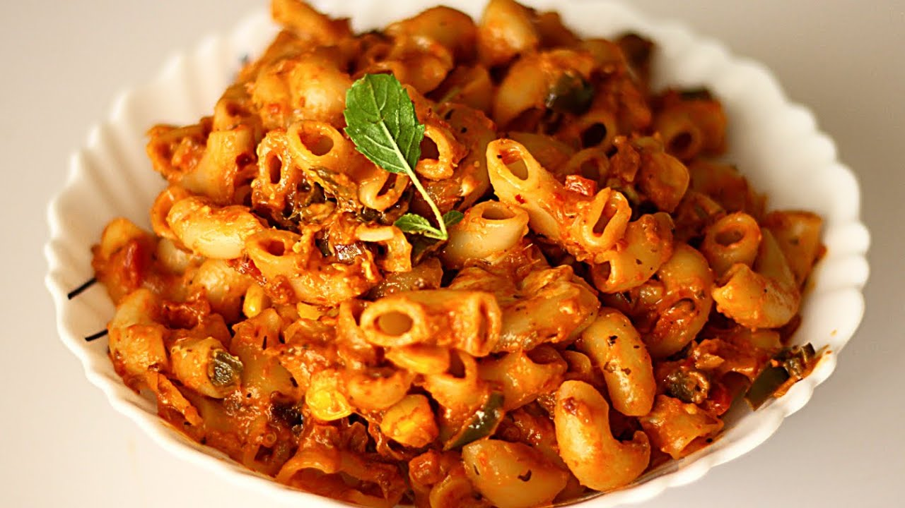

Home
Macaroni Recipe

Description
The history of macaroni, particularly its association with cheese, is a fascinating journey that parallels its culinary evolution. While pasta itself has ancient roots, with evidence of noodle-like dishes in various cultures for millennia, the specific combination of macaroni and cheese gained prominence in Europe during the 18th century, particularly in England. Early recipes often featured baked layers of pasta with rich cheese sauces, sometimes incorporating béchamel. This luxurious dish later made its way to America, notably popularized by figures like Thomas Jefferson. From these aristocratic origins, the dish eventually transformed into the beloved, accessible comfort food we know today, especially with the advent of packaged mixes in the 20th century.
To make delicious macaroni, begin by boiling your chosen pasta until al dente. Drain thoroughly. In a separate saucepan, prepare a rich, creamy sauce, often cheese-based, ensuring it's smooth and lump-free. Combine the cooked macaroni with the sauce, stirring gently to coat every piece evenly. For an extra touch, you might bake it briefly for a golden, bubbly top. Serve hot and enjoy this comforting, versatile dish!
Ingredients
For the Macaroni:
- Elbow macaroni (or other small pasta shapes like shells)
- Water
- Salt(forboiling water)
For the Cheese Sauce (Roux-based):
- Butter (unsalted or salted)
- All-purpose flour
- Milk
- Shredded cheese
- Salt
- Black pepper
- Mustard powder
- Garlic powder
Steps
-
Cook the Macaroni: Boil a large pot of salted water. Add the elbow macaroni and cook according to package directions until it's al dente (slightly firm to the bite). Drain the pasta and set it aside.
-
Make the Roux: In a separate saucepan, melt butter over medium heat. Gradually whisk in the all-purpose flour, stirring constantly to create a smooth paste (this is your roux). Cook for 1-2 minutes until slightly golden and fragrant, but don't let it brown too much.
-
Add Milk and Thicken: Slowly whisk in the milk into the roux, a little at a time, ensuring no lumps form. Continue whisking constantly over medium heat until the sauce thickens to a creamy consistency that coats the back of a spoon (about 5-7 minutes).
-
Incorporate Cheese and Seasonings: Remove the sauce from the heat. Gradually add the shredded cheese, stirring until it's completely melted and smooth. Stir in salt, black pepper, and any optional seasonings like mustard powder or garlic powder. Taste and adjust seasonings as needed.
-
Combine and Serve (or Bake): Add the cooked and drained macaroni to the cheese sauce. Stir gently until all the macaroni is evenly coated. Serve immediately for stovetop mac and cheese. For a baked version, transfer the mixture to a baking dish, top with optional breadcrumbs and/or extra cheese, and bake in a preheated oven until bubbly and golden brown.